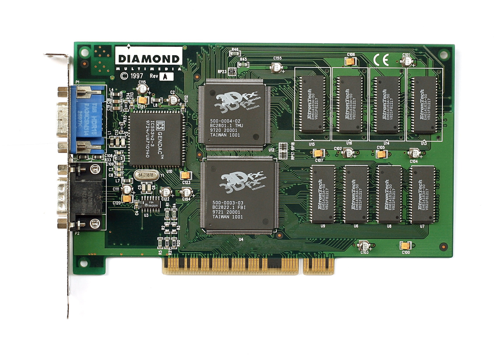
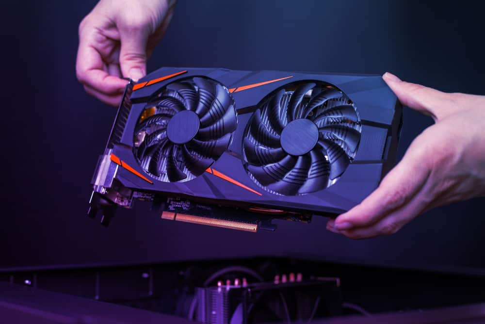

Karty Graficzne

Karta graficzna – karta rozszerzeń komputera odpowiedzialna za renderowanie grafiki i jej konwersję na sygnał zrozumiały dla wyświetlacza. Pierwsze karty graficzne potrafiły jedynie wyświetlać znaki alfabetu łacińskiego ze zdefiniowanego w pamięci karty generatora znaków – tryb tekstowy. Kolejna generacja kart graficznych potrafiła już wyświetlać w odpowiednim kolorze poszczególne punkty (piksele) – tryb graficzny. Nowoczesne procesory graficzne udostępniają wiele funkcji ułatwiających i przyspieszających pracę programów. Możliwe jest narysowanie odcinka, trójkąta, wieloboku, wypełnienie ich zadanym kolorem lub wzorem, tzw. akceleracja 2D. Większość kart na rynku posiada również wbudowane funkcje ułatwiające tworzenie obrazu przestrzeni trójwymiarowej, tzw. akceleracja 3D. Niektóre posiadają zaawansowane algorytmy potrafiące na przykład wybrać tylko widoczne na ekranie elementy z przestrzeni. W nowych układach graficznych zrezygnowano ze sztywnego schematu obliczeń, dając użytkownikowi pewną ilość jednakowych "rdzeni", które może on sobie zaprogramować (przy pomocy shaderów) do wyświetlania dowolnych efektów graficznych. Umożliwia to też wykorzystanie karty graficznej jako procesora ogólnego przeznaczenia (GPGPU), zdolnego do przeliczania dużych zbiorów uporządkowanych danych. |

Wraz z pojawieniem się kart Voodoo firmy 3dfx, które znacznie przyspieszały wyświetlanie trójwymiarowej, pojawił się termin akcelerator graficzny. Karty te wymagały bowiem obecności w komputerze zwykłej karty graficznej. Pozostali producenci zdecydowali się na integrację akceleratorów grafiki trójwymiarowej z samymi kartami graficznymi, podobnie jak to miało miejsce z akceleratorami grafiki dwuwymiarowej. Później także firma 3dfx zdecydowała się zintegrować swoje akceleratory z kartami graficznymi. |

Większość kart graficznych (w tym wszystkie współczesne) składa się z następujących elementów:
|